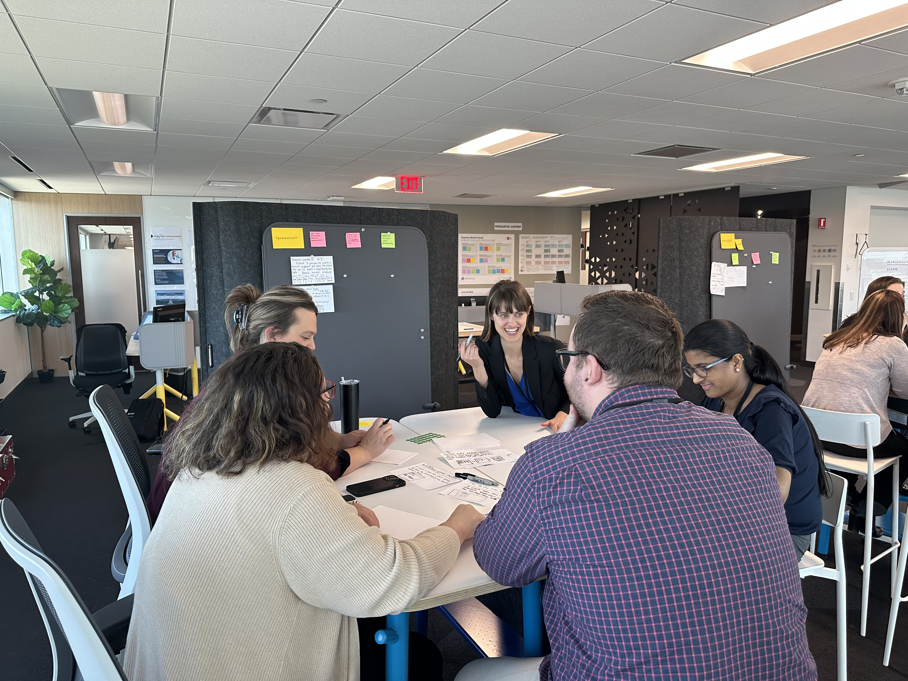

Service Designer, Design Strategist & Researcher. Stanford lecturer. Champion of design thinking as a practice.
Download resume →
I make complex systems make sense, to the people inside them and to the people they're meant to serve.
My work sits at the intersection of service design and research. I shape the experiences, processes, and structures that organizations deliver, then ground every decision in what real people actually need.
I work across the full arc of the design process — from ethnographic research, synthesis, and workshop facilitation to ideation, service blueprinting, and implementation. I've worked in finance, healthcare, aviation, and retail, often in environments where the stakes are high and the systems are tangled. At every organization I've worked in, I've championed design thinking as a practice, building the internal capability and culture for teams to approach problems differently.
Outside of my day job, I teach Needfinding in Design at Stanford, where I help senior undergraduates learn to ask better questions and build from what they find. Needfinding is the foundation of everything I do, the belief that the most important answers are already out there, waiting to be heard.
"Lauren is a standard-bearer for human-centered design thinking. In every design interaction I have had with her or observed, she is consistent in advocating for the design thinking process to thoroughly and intelligently illuminate the actual problems so the team — above any individual — can arrive at unexpected, productive solutions."